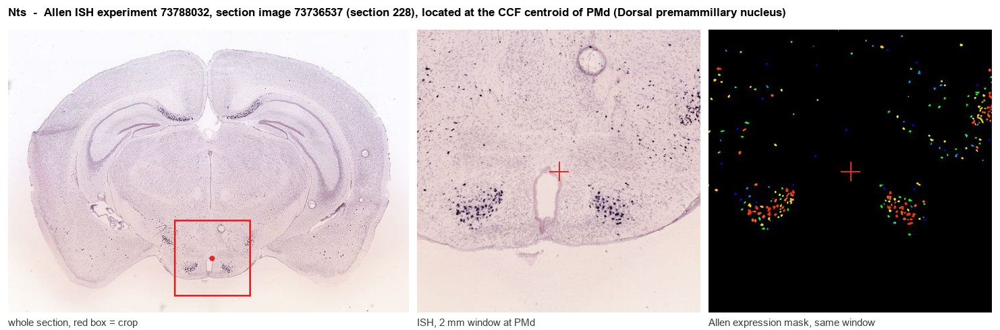
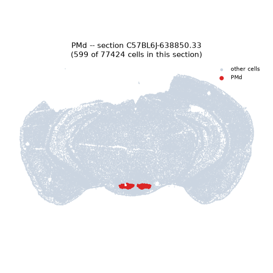
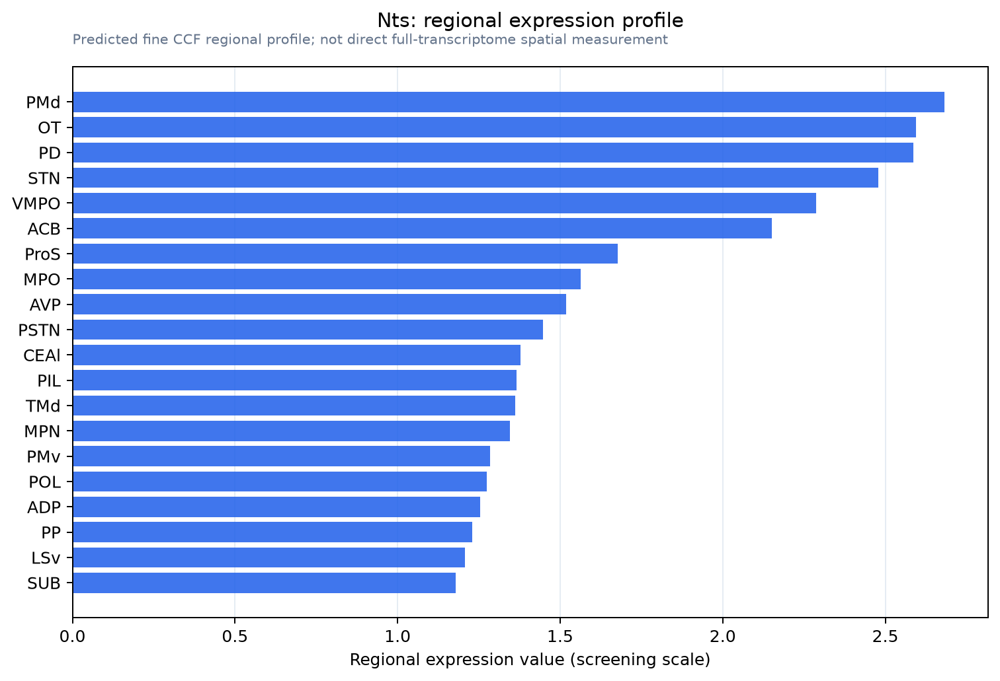

Nts
Spatial tier: REGION_BIASED · Class: OTHER · Top region: PMd (Dorsal premammillary nucleus) · Positive regions: 36/554
44.7Discovery Score
41.5Targetability Score
CEvidence grade C
What this means: Nts: fine CCF profile is region-biased toward PMd (top regions: PMd, OT, PD, STN, VMPO); this is a discovery lead, not direct proof.
Function in PMd: evidence, prediction, innovation
- Gene function
- Nts encodes neurotensin, a 13-amino-acid neuropeptide cleaved from a larger precursor and released from dense-core vesicles. It signals through the Gq-coupled NTSR1 and NTSR2 receptors and the sortilin-related NTSR3, producing slow modulation of neuronal excitability, strong interactions with dopamine transmission, hypothermia and analgesia.
- Region function
- The dorsal premammillary nucleus is the hypothalamic predator-defence node: it receives input from the medial amygdala and anterior hypothalamus and drives flight and risk assessment through projections to the dorsolateral periaqueductal gray and anteromedial thalamus.
- Published in this region
- expression only No region-specific literature found for neurotensin function in PMd. Lantos 1995 mapped peptide-immunoreactive cell bodies and fibres across the rat premammillary region, and the functionally characterised PMd population is instead defined by cholecystokinin: Wang 2021 showed PMd-CCK neurons and their PAG projection set escape vigour to innate and conditioned threats.
- Predicted function
- Prediction: neurotensin released by PMd neurons onto dorsolateral PAG and anteromedial thalamic targets would act as a slow, Gq-mediated amplifier that sustains the defensive state after the fast glutamatergic escape signal, biasing the animal towards prolonged risk assessment and flight readiness. Deleting Nts in PMd or blocking NTSR1 in dlPAG (SR48692) is predicted to shorten flight bouts and reduce escape vigour to a looming or predator stimulus without abolishing the initial escape, whereas local neurotensin should prolong defensive freezing/flight.
- Innovation
- ★★★★☆ 4/5 The PMd escape circuit is now well defined by CCK and glutamate markers, but its neurotensin component has never been manipulated.
- Tools
- Nts-Cre and Nts-IRES-Cre driver lines (JAX), NTSR1 antagonist SR48692 (meclinertant) and SR142948A, NTSR1-Cre mice, anti-neurotensin antibodies, PMd targeting protocols established with Cck-Cre.
- References
Direct evidence located at the region

Allen ISH experiment 73788032, section image 73736537 (section 228): the section that contains the CCF centroid of Dorsal premammillary nucleus according to the Allen image-to-atlas alignment (reference_to_image), with a 2 mm window around that point. Left: whole section, red box = window. Middle: ISH signal. Right: Allen's expression-mask view of the same window. open this image in the Allen viewer
Look it up yourself: Allen Mouse Brain ISH for NtsAllen reference atlas: PMd (structure 980)ABC Atlas MERFISH viewer(in the ABC Atlas choose dataset MERFISH-C57BL6J-638850-CCF, colour cells by gene "Nts" or by parcellation_substructure "PMd")All genes confined to PMd + 3-D brain
Direct spatial evidence
MERFISH REGION LOCATOR

Regional expression figure

Predicted WMB × fine-CCF profile; not direct full-transcriptome spatial measurement.
Spatial profile
Evidence and specificity
- Evidence status
- PREDICTED_FINE
- Direct sources
- None; predicted localization only
- Exclusive threshold
- 12 positive regions out of 554
- Spatial specificity
- 0.322
- Top-region fraction
- 0.043
- Filter status
- PASS
Interpretation limits
- Cell-type-to-region projection is imputed expression, not direct spatial measurement.
- Adult reference atlases do not establish stability across age, sex, strain, state, or disease.
- Transcript abundance does not guarantee protein abundance or genetic-tool performance.